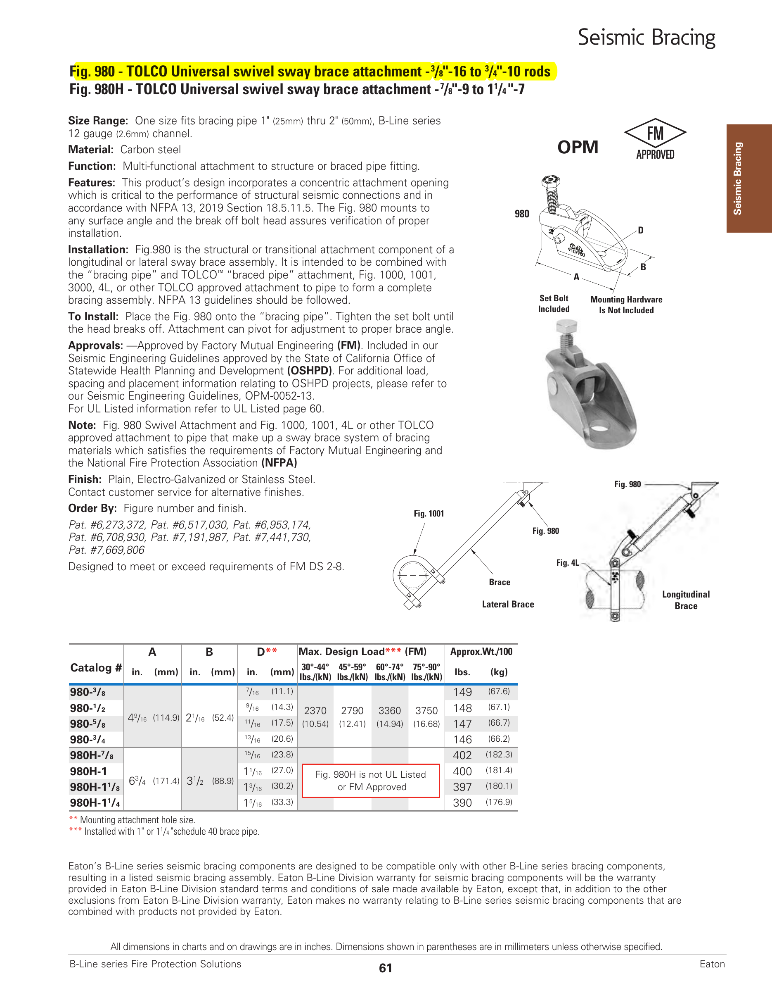
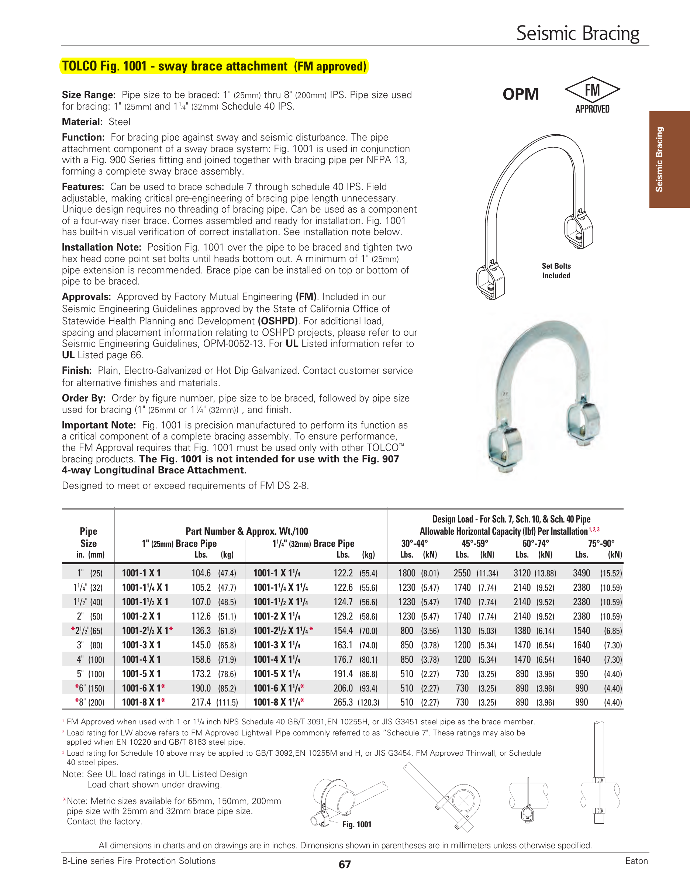

Actual BGC welded-main listing — page 9
Piece #E.09 is 3-inch Schedule 10 with two 3 × 1¼ GOL (Up:0) outlets. This is the actual source behind the registered gym junctions.

These are direct renders of the project fabrication and submittal sources. They are not generated CAD. The machine gate proves what can be selected and, just as importantly, prevents a catalog-looking substitute from becoming an installed part.
Piece #E.09 is 3-inch Schedule 10 with two 3 × 1¼ GOL (Up:0) outlets. This is the actual source behind the registered gym junctions.
Pieces #E.10–#E.13 retain the same 3 × 1¼ grooved-outlet identity and exact shop stations.

The official No. 142 table is for a 1-inch nominal branch (1.315-inch actual OD). BGC requires a 1¼-inch nominal branch (1.660-inch actual OD). The downloaded manufacturer DWG is hash-sealed as a negative control, not used as geometry.
| Candidate | Branch nominal | Actual OD | Decision |
|---|---|---|---|
| Victaulic No. 142 | 1 in | 1.315 in | Rejected |
| BGC #E gym outlet | 1¼ in | 1.660 in | Exact body source still required |

The released BOM names material code 13520712, quantity 18. R2 supplies common A/B dimensions, but the BOM wording does not close the exact rod/hole variant or complete body solid.

The released BOM names Y379010020, quantity 3, for a 2-inch Fig. 1001. The cutsheet gives size/load choices, but the brace-pipe variant and full manufacturing envelope remain unresolved.

The BOM rows say Non-TOLCO Part for the installed equivalents. TOLCO geometry is therefore not promoted as the actual bracket.

The approved packet includes Victaulic Styles 009N and 109. Until purchasing or installed evidence chooses one, neither may appear as the exact BGC coupling.

The approved packet publishes the 3-inch Fig. 300 A/B dimensions. The native project hanger records do not identify AFCON, so this remains candidate-family evidence only.

Current boundary: source identity and wrong-part rejection are green. Exact outlet body/weld profile/takeout, exact coupling selection, bracket solids, bolt and pipe threads, engagement/tolerance, mating fit, installed placement, fabrication release, field release, and VPS release remain fail-closed.
Open the BGC plan + section + PDF-underlaid 3D registration proof